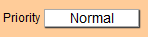
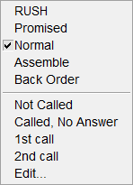
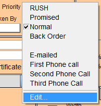
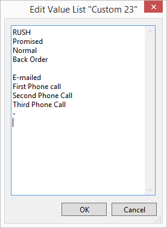

Track Work Orders by Importance
The Status priority field shows the level of importance or sequence of the frame job.
-
When a new Work Order is created, the "Normal" priority is automatically entered.
-
Other options which can be selected are: Rush, Promised and Back Ordered. These selections do not affect the price of the order but do allow you to track and rank your orders by importance.
The Priority Field Explained
-
On the Work Order, the Priority field shows the status of the frame job.

-
When a new Work Order is created, the "Normal" priority is the default and is automatically entered. Other options which can be selected are: "Rush," "Promised" and "Back Ordered." These selections do not affect the price of the order.

-
If you wish to add a fee with the selection of "Rush," then the fee needs to be added to the Price Codes file as a “Rush Charge” in the Extra group. It can be a fixed dollar amount per order or a price per united inch which would take into account the size of the piece and charge more for larger sizes.
Tip: You can also base the Rush Charge as a percentage of all of the frame elements by entering it into Multi-angle field. For example, The item Rush Charge, with a .02 markup, will multiply all the frame components on the work order by 2% and add that amount to the order.
-
By selecting "Promised" in the Priority field, you are confirming that the piece needs to be done on the exact date entered and that you have made a commitment to the customer to have it completed on that day.
-
Back Ordered is used to indicate that one or more items on the order have been back ordered and so the piece is unable to be worked on or completed until the missing components arrive.
-
Changing the status of the Priority field will not affect the order of the Incomplete list which is still sorted by Due Date. Click on the underlined word Priority to sort the Incomplete list by: Rush, Promised, Normal, and Back Order.
-
Tracking Estimates: It is important to track why sales are missed. You can customize the drop down menu while in List View. Click on Edit… at the bottom of the list to identify why an Estimate was not made into a sale. Here are four reasons: (NS stands for no sale.) NS – price objection, NS – talk to partner, NS – design concern, or NS – other reason.
-
Perform a search of Estimates for a given time range and see if there is a trend that you can resolve. This may be helpful for sales staff if the same person consistently has “design concern” or if the store has a large number of “price objections” for specific items, e.g. posters, certificates, etc.
How to Track Estimates
It is important to track when and why sales are missed. You can use the Priority field for this purpose.
-
Start by customizing the Priority dropdown; click Edit... at the bottom of the list.

-
The Edit Value List dialog appears.

-
To track and identify why an Estimate was not made into a sale, type in these four new reasons: (NS stands for no sale.) Then, as a Work Order Estimate does not turn into a sale, update the Priority field accordingly. For example:
NS - price objection
NS - talk to partner
NS - design concern
NS - other reason
To track and identify why an Estimate was not made into a sale, type in these four new reasons: (NS stands for no sale.) Then, as a Work Order Estimate does not turn into a sale, update the Priority field accordingly.
Later, you can search for Estimates during a given time range and see if there is a trend that you can resolve. This may be helpful for sales staff if the same person consistently has "design concern" or if the store has a large number of "price objections" for specific items, e.g. posters, certificates, etc.
How to Delete the Priority and Leave it Blank
After selecting a priority, e.g. Rush, from the list, the text appears in the Priority field.
-
To remove the item from the field, re-select the item, e.g. Rush, and then immediately press the Delete or Backspace key to remove it from the field on this one Work Order only.
-
The priority remains appear in the pop-up list for future use.
How to Change the Priority
After selecting a Priority, e.g. Normal, from the list, the text will appear in the Priority field.
-
To change the priority shown in the field, click on the field and select a different priority from the list.
-
There is no need to delete the item from the field before re-selecting a different priority in the list.
How to Add a Fee to the Rush Priority
-
If you wish to add a fee with the selection of Rush, then it can be added separately to your Price Codes as a Rush Charge in the Extra or Multi-Angle group.
See also: Set up Pricing for Multi-Angled Frames -
This can be a fixed dollar amount per order or a price per united inch which would take into account the size of the piece and charge more for larger sizes.
Tip: You can also base the Rush Charge as a percentage of all of the frame elements by entering it into the Multi-angle field. Create a new Multi-Angle Price Code Item, fill in the fields. For Item use Rush Charge and for Markup Formula, enter a decimal, using .10 for 10%. Then when creating a Work Order, you can find your Rush Charge in the Multi-Angle field drop-down list.
© 2023 Adatasol, Inc.